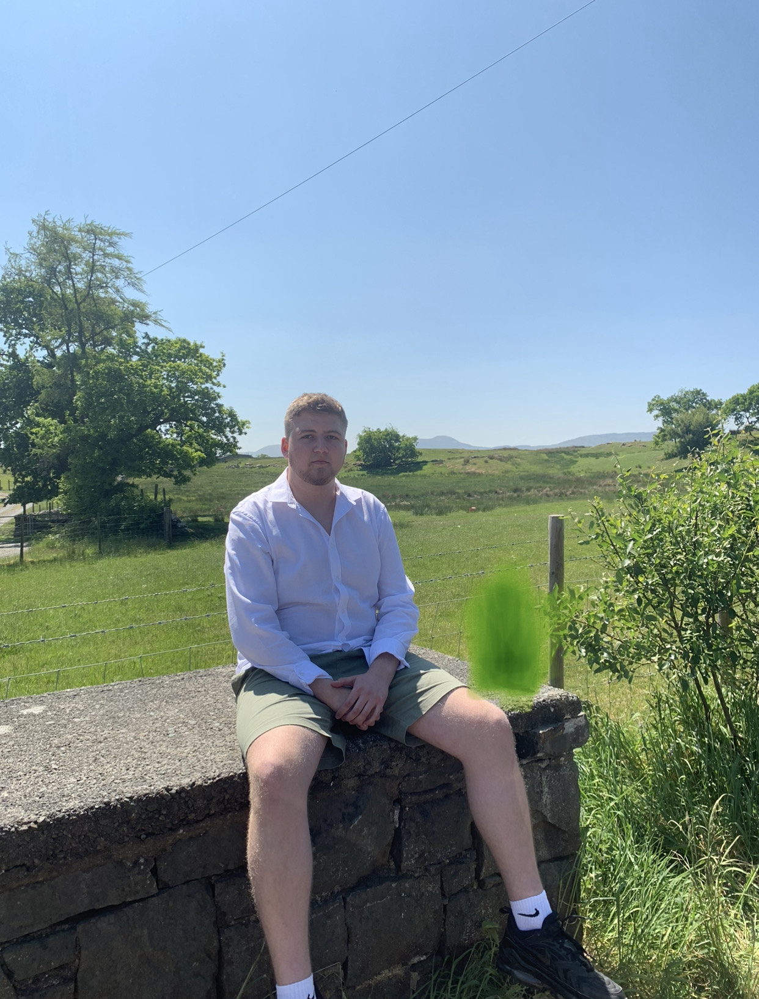

I
am a person who is positive about every aspect of life.
There are many things I like to do, to see, and to experience.
I like to read, I like to write; I like to think, I like to dream; I like to
talk, I like to listen.
I like to see the sunrise in the morning, I like to see the moonlight at night;
I like to feel the music flowing on my face, I like to smell the wind coming
from the ocean.
I like to look at the clouds in the sky with a blank mind, I like to do thought
experiment when I cannot sleep in the middle of the night.
I like flowers in spring, rain in summer, leaves in autumn, and snow in winter.
I like to sleep early, I like to get up late; I like to be alone, I like to be
surrounded by people.
I like countrys peace, I like metropolis noise; I like the beautiful west lake
in Hangzhou, I like the flat cornfield in Champaign.
I like delicious food and comfortable shoes; I like good books and romantic
movies. I like the land and the nature, I like people. And, I like to laugh.